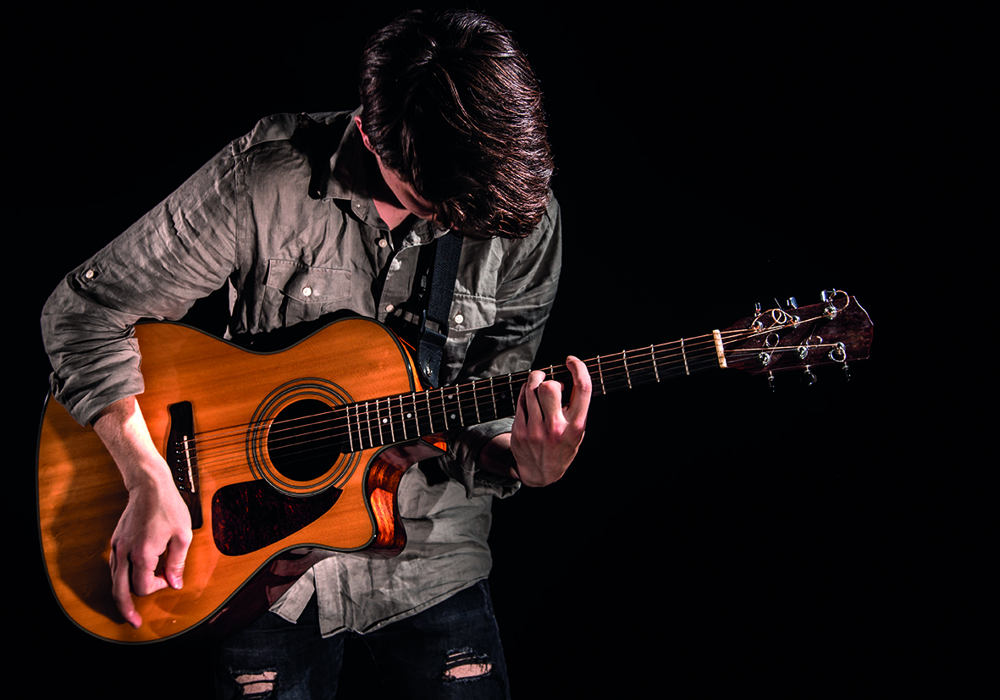
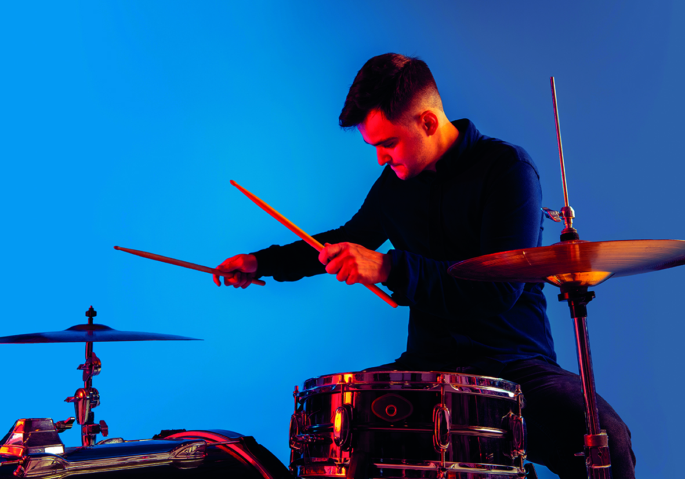
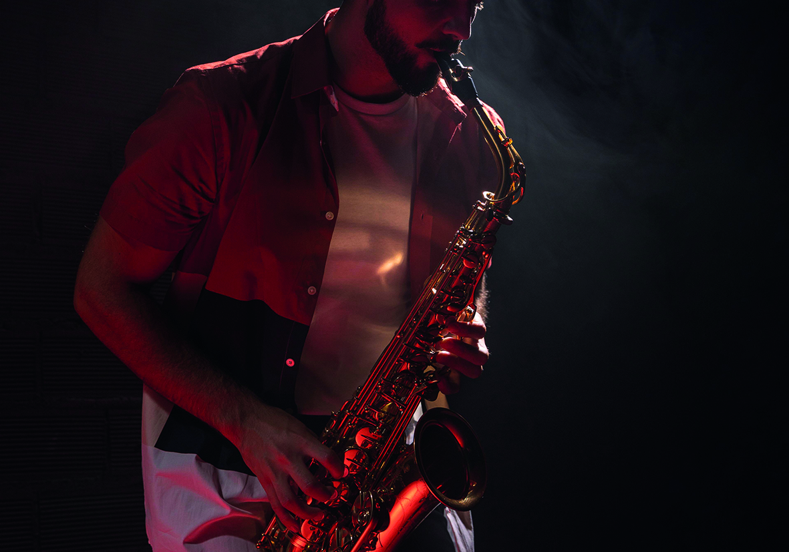
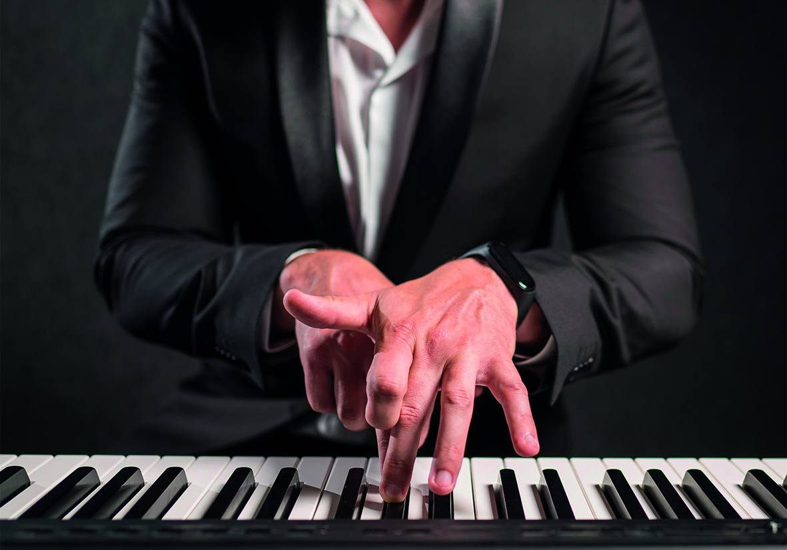

Hello! I'm Marco, a keyboard player with over 10 years' experience. I come from the world of pop and electronic music, but in recent years I have also specialised in soul and R&B. I work regularly in the studio arranging synth and piano parts and have live experience in clubs and festivals. I am looking for a serious project where I can grow and contribute my ideas.
Hi, I'm Davide, an electric and acoustic guitarist. I've been playing for 15 years and have a background in rock, blues and funk. I've worked as a session musician in the studio and have played many live gigs with cover bands and original projects. I'm looking for a stable band to play live with and produce new material.
Hey! I'm Giulia, a drummer with over 12 years of experience. I've played in various rock, pop and light metal projects. I'm precise, used to click tracks and very flexible in arrangements. I've played at regional festivals and often collaborate with studios for custom recordings. I'm ready for a new, motivated and dynamic project.
Nice to meet you! I'm Luca, rhythm and lead guitarist. I move between pop, alternative and ambient sounds. I love to craft the sound, use complex pedalboards and create textures that add depth to the song. I have experience both live and in recording. I am open to collaborations for new creative projects.
Hey! My name is Elisa and I've been playing the keyboard since 2012. I love creating atmospheres, soft pads and harmonic lines that fill the piece without overpowering it. I've played with several indie bands and toured small and medium-sized venues in Italy. I am reliable, creative and also available for studio sessions or remote recordings.